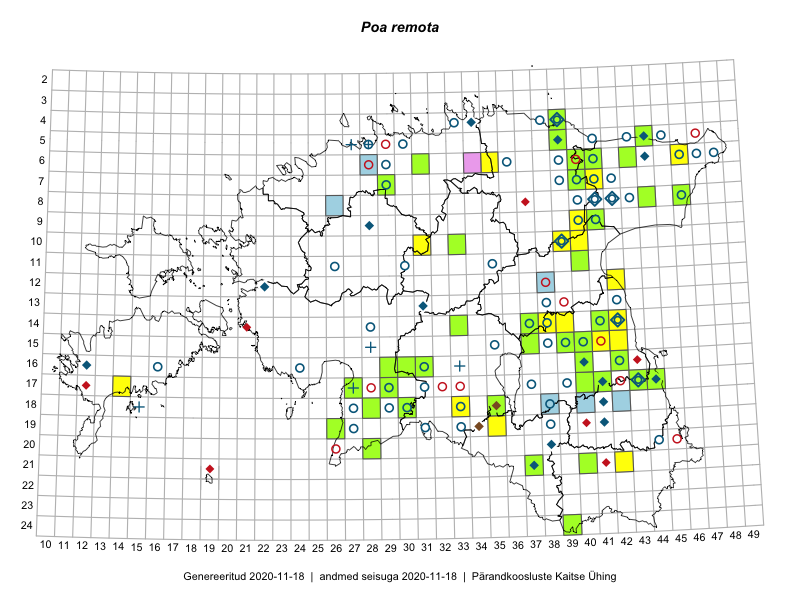

Poa remota
Uuendatud: 2016-12-07
Kaardile koondatud taksonid: Poa remota Forselles

Kaart põhineb 31 kirjel, neist vaatlusi 26 ja eksemplare 5. Taksonit on leitud 25 ruudust.
| Ruut | Vaatleja(d) | Vaatlusaeg | Kirje tüüp | Viide andmebaasikirjele |
|---|---|---|---|---|
| 16-40 | Thea Kull | 2015-07-07 | ruut/ala | vaata PlutoFis |
| 15-42 | Peedu Saar, Eerik Leibak | 2015-07-30 | punkt | vaata PlutoFis |
| 14-41 | Peedu Saar, Ott Luuk | 2015-06-21 | ruut/ala | vaata PlutoFis |
| 14-42 | Peedu Saar, Ott Luuk | 2015-06-21 | ruut/ala | vaata PlutoFis |
| 15-42 | Peedu Saar, Eerik Leibak | 2015-07-30 | ruut/ala | vaata PlutoFis |
| 08-44 | Toomas Kukk, Peedu Saar | 2014-07-09 | ruut/ala | vaata PlutoFis |
| 16-29 | Peedu Saar, Liina Oja | 2015-06-11 | ruut/ala | vaata PlutoFis |
| 10-31 | Ott Luuk, Toivo Sepp | 2015-07-12 | punkt | vaata PlutoFis |
| 07-41 | Toomas Kukk, Peedu Saar | 2014-07-10 | ruut/ala | vaata PlutoFis |
| 17-40 | Thea Kull, Peedu Saar | 2015-06-19 | ruut/ala | vaata PlutoFis |
| 17-41 | Thea Kull, Peedu Saar | 2015-06-19 | ruut/ala | vaata PlutoFis |
| 19-35 | Ott Luuk, Hannes Pehlak | 2015-06-12 | ruut/ala | vaata PlutoFis |
| 17-43 | Thea Kull, Eerik Leibak | 2015-07-05 | ruut/ala | vaata PlutoFis |
| 06-41 | Toomas Kukk, Peedu Saar | 2014-07-10 | punkt | vaata PlutoFis |
| 14-42 | Ott Luuk, Peedu Saar | 2015-06-21 | punkt | vaata PlutoFis |
| 17-14 | Elle Rajandu, Karin Kikas | 2015-07-22 | punkt | vaata PlutoFis |
| 04-39 | Kaili Orav, Silvia Pihu | 2015-06-19 | ruut/ala | vaata PlutoFis |
| 24-39 | Meeli Mesipuu, Thea Kull, Eerik Leibak | 2014-06-09 | punkt | vaata PlutoFis |
| 16-22 | Toomas Kukk, Peedu Saar | 2016-05-14 | ruut/ala | vaata PlutoFis |
| 07-29 | Meeli Mesipuu, Thea Kull | 2016-06-02 | punkt | vaata PlutoFis |
| 07-29 | Thea Kull, Meeli Mesipuu | 2016-06-02 | ruut/ala | vaata PlutoFis |
| 21-42 | Vivika Väli, Ülo Väli | 2015-07-26 | ruut/ala | vaata PlutoFis |
| 07-40 | Toomas Kukk, Tiit Hallikma | 2016-07-29 | ruut/ala | vaata PlutoFis |
| 09-41 | Ott Luuk, Eerik Leibak | 2016-08-05 | ruut/ala | vaata PlutoFis |
| 09-40 | Ott Luuk, Eerik Leibak | 2016-08-09 | ruut/ala | vaata PlutoFis |
| 16-31 | Elle Rajandu, Indrek Tammekänd | 2016-07-20 | ruut/ala | vaata PlutoFis |
| 14-41 | Peedu Saar, Ott Luuk | 2015-06-21 | eksemplar | vaata PlutoFis |
| 17-40 | Peedu Saar, Thea Kull | 2015-06-19 | eksemplar | vaata PlutoFis |
| 16-29 | Peedu Saar, Liina Oja | 2015-06-11 | eksemplar | vaata PlutoFis |
| 10-33 | Peedu Saar, Liina Oja | 2015-06-08 | eksemplar | vaata PlutoFis |
| 08-23 | Peedu Saar | 2012-06-01 | eksemplar | vaata PlutoFis |